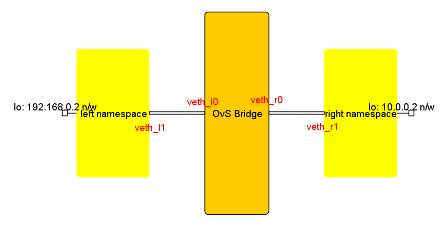
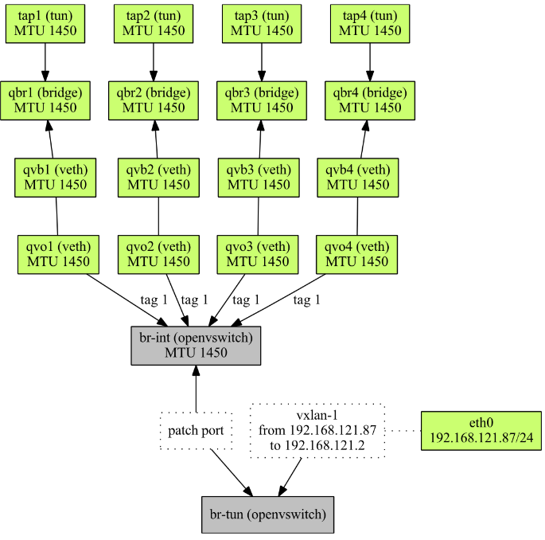
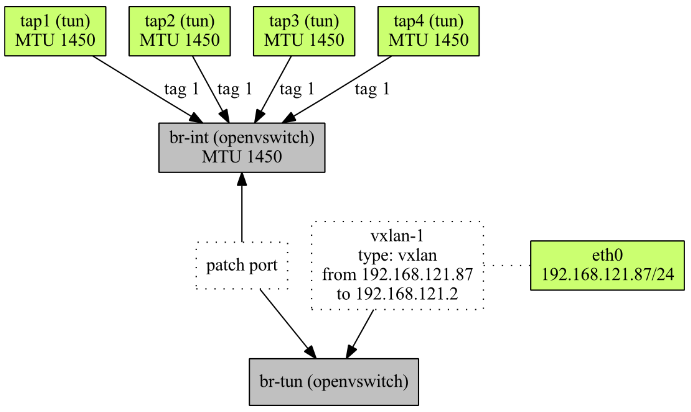

Open vSwitch Conntrack
OVS can be used with the Connection tracking system where OpenFlow flow can be used to match on the state of a TCP, UDP, ICMP, etc., connections. (Connection tracking system supports tracking of both statefull and stateless protocols)
Match Fields
- ct_state: new, est, rel, rpl, inv, trk, snat, dnat
- ct_zone: A zone is an independent connection tracking context which can be set by a ct action. A 16-bit ct_zone set by the most recent ct action (by an OpenFlow flow on a conntrack entry) can be used as a match field in another flow entry.
- ct_mark: The 32-bit metadata committed, by an action within the exec parameter to the ct action, to the connection to which the current packet belongs.
- ct_label: The 128-bit label committed by an action within the exec parameter to the ct action, to the connection to which the current packet belongs.
- ct_nw_src/ct_ipv6_src: Matches IPv4/IPv6 conntrack original direction tuple source address.
- ct_nw_dst/ct_ipv6_dst: Matches IPv4/IPv6 conntrack original direction tuple destination address.
- ct_nw_proto: Matches conntrack original direction tuple IP protocol type.
- ct_tp_src: Matches on the conntrack original direction tuple transport source port.
- ct_tp_dst: Matches on the conntrack original direction tuple transport destination port.
Actions
- commit: Commit the connection to the connection tracking module which will be stored beyond the lifetime of packet in the pipeline.
- force: The force flag may be used in addition to commit flag to effectively terminate the existing connection and start a new one in the current direction.
- table=number: Fork pipeline processing in two. The original instance of the packet will continue processing the current actions list as an untracked packet. An additional instance of the packet will be sent to the connection tracker, which will be re-injected into the OpenFlow pipeline to resume processing in table number, with the ct_state and other ct match fields set.
- zone=value OR zone=src[start..end]: A 16-bit context id that can be used to isolate connections into separate domains, allowing over‐lapping network addresses in different zones. If a zone is not provided, then the default is to use zone zero.
- exec([action][,action…])**: Perform restricted set of actions within the context of connection tracking. Only actions which modify the ct_mark or ct_label fields are accepted within the exec action.
- alg=<ftp/tftp>: Specify alg (application layer gateway) to track specific connection types.
- nat: Specifies the address and port translation for the connection being tracked.
Setup Enviroment
Topology for conntrack testing
Start openvswitch service
1
$ /usr/local/share/openvswitch/scripts/ovs-ctl start
Create bridge, namespace and port
1
2
3
4
5
6
7
8
9
10
11$ ip netns add left
$ ip netns add right
$
$ ip link add veth_l0 type veth peer name veth_l1
$ ip link set veth_l1 netns left
$ ip link add veth_r0 type veth peer name veth_r1
$ ip link set veth_r1 netns right
$
$ ovs-vsctl add-br br0
$ ovs-vsctl add-port br0 veth_l0
$ ovs-vsctl add-port br0 veth_r0Add flows
1
2
3
4
5
6
7
8
9
10
11
12
13
14
15
16
17
18
19
20
21
22
23
24
25
26
27$ ovs-ofctl add-flow br0 \
"table=0, priority=10, in_port=veth_l0, actions=veth_r0"
$ ovs-ofctl add-flow br0 \
"table=0, priority=10, in_port=veth_r0, actions=veth_l0"
$
$ ovs-ofctl add-flow br0 \
"table=0, priority=50, ct_state=-trk, tcp, in_port=veth_l0, actions=ct(table=0)"
$ ovs-ofctl add-flow br0 \
"table=0, priority=50, ct_state=+new, tcp, in_port=veth_l0, actions=ct(commit),veth_r0"
$
$ ovs-ofctl add-flow br0 \
"table=0, priority=50, ct_state=-trk, tcp, in_port=veth_r0, actions=ct(table=0)"
$ ovs-ofctl add-flow br0 \
"table=0, priority=50, ct_state=+est, tcp, in_port=veth_r0, actions=veth_l0"
$
$ ovs-ofctl add-flow br0 \
"table=0, priority=50, ct_state=+est, tcp, in_port=veth_l0, actions=veth_r0"
$
# ovs-ofctl dump-flows br0
cookie=0x0, duration=1405.483s, table=0, n_packets=0, n_bytes=0, priority=50,ct_state=-trk,tcp,in_port="veth_l0" actions=ct(table=0)
cookie=0x0, duration=43.364s, table=0, n_packets=0, n_bytes=0, priority=50,ct_state=-trk,tcp,in_port="veth_r0" actions=ct(table=0)
cookie=0x0, duration=59.531s, table=0, n_packets=0, n_bytes=0, priority=50,ct_state=+new,tcp,in_port="veth_l0" actions=ct(commit),output:"veth_r0"
cookie=0x0, duration=33.071s, table=0, n_packets=0, n_bytes=0, priority=50,ct_state=+est,tcp,in_port="veth_r0" actions=output:"veth_l0"
cookie=0x0, duration=20.592s, table=0, n_packets=0, n_bytes=0, priority=50,ct_state=+est,tcp,in_port="veth_l0" actions=output:"veth_r0"
cookie=0x0, duration=1423.495s, table=0, n_packets=0, n_bytes=0, priority=10,in_port="veth_l0" actions=output:"veth_r0"
cookie=0x0, duration=1414.843s, table=0, n_packets=0, n_bytes=0, priority=10,in_port="veth_r0" actions=output:"veth_l0"
cookie=0x0, duration=1448.989s, table=0, n_packets=0, n_bytes=0, priority=0 actions=NORMALInstall scapy, installation guide
Send packet with scapy, connection setup, transfer data, and connection teardown.
1
2
3
4
5
6
7
8
9
10
11
12
13
14
15
16
17
18
19
20$ sudo ip netns exec left sudo ip link set lo up
$ sudo ip netns exec left sudo ip link set veth_l1 up
$ sudo ip netns exec right sudo ip link set lo up
$ sudo ip netns exec right sudo ip link set veth_r1 up
$ sudo ifconfig veth_l0 up
$ sudo ifconfig veth_r0 up
$ sudo ip netns exec left sudo `which scapy`
$ sudo ip netns exec right sudo `which scapy`
$
$ >>> sendp(Ether()/IP(src="192.168.0.2", dst="10.0.0.2")/TCP(sport=1024, dport=2048, flags=0x02, seq=100), iface="veth_l1")
$ >>> sendp(Ether()/IP(src="10.0.0.2", dst="192.168.0.2")/TCP(sport=2048, dport=1024, flags=0x12, seq=200, ack=101), iface="veth_r1")
$ >>> sendp(Ether()/IP(src="192.168.0.2", dst="10.0.0.2")/TCP(sport=1024, dport=2048, flags=0x10, seq=101, ack=201), iface="veth_l1")
$
$ >>> sendp(Ether()/IP(src="192.168.0.2", dst="10.0.0.2")/TCP(sport=1024, dport=2048, flags=0x10, seq=101, ack=201)/"X", iface="veth_l1")
$ >>> sendp(Ether()/IP(src="10.0.0.2", dst="192.168.0.2")/TCP(sport=2048, dport=1024, flags=0X10, seq=201, ack=102), iface="veth_r1")
$
$ >>> sendp(Ether()/IP(src="192.168.0.2", dst="10.0.0.2")/TCP(sport=1024, dport=2048, flags=0x11, seq=102, ack=201), iface="veth_l1")
$ >>> sendp(Ether()/IP(src="10.0.0.2", dst="192.168.0.2")/TCP(sport=2048, dport=1024, flags=0X11, seq=201, ack=103), iface="veth_r1")
$ >>> sendp(Ether()/IP(src="192.168.0.2", dst="10.0.0.2")/TCP(sport=1024, dport=2048, flags=0x10, seq=103, ack=202), iface="veth_l1")Monitor the conntrack and flow changes
1
2
3
4
5
6
7
8
9
10
11
12
13
14
15
16
17
18
19
20
21
22
23
24
25
26
27
28
29
30
31
32
33
34
35
36
37
38
39# ovs-appctl dpctl/dump-conntrack | grep 1024
tcp,orig=(src=192.168.0.2,dst=10.0.0.2,sport=1024,dport=2048),reply=(src=10.0.0.2,dst=192.168.0.2,sport=2048,dport=1024),protoinfo=(state=SYN_SENT)
# ovs-appctl dpctl/dump-conntrack | grep 1024
tcp,orig=(src=192.168.0.2,dst=10.0.0.2,sport=1024,dport=2048),reply=(src=10.0.0.2,dst=192.168.0.2,sport=2048,dport=1024),protoinfo=(state=ESTABLISHED)
# ovs-appctl dpctl/dump-conntrack | grep 1024
tcp,orig=(src=192.168.0.2,dst=10.0.0.2,sport=1024,dport=2048),reply=(src=10.0.0.2,dst=192.168.0.2,sport=2048,dport=1024),protoinfo=(state=ESTABLISHED)
# ovs-appctl dpctl/dump-conntrack | grep 1024
tcp,orig=(src=192.168.0.2,dst=10.0.0.2,sport=1024,dport=2048),reply=(src=10.0.0.2,dst=192.168.0.2,sport=2048,dport=1024),protoinfo=(state=ESTABLISHED)
# ovs-appctl dpctl/dump-conntrack | grep 1024
tcp,orig=(src=192.168.0.2,dst=10.0.0.2,sport=1024,dport=2048),reply=(src=10.0.0.2,dst=192.168.0.2,sport=2048,dport=1024),protoinfo=(state=ESTABLISHED)
# ovs-appctl dpctl/dump-conntrack | grep 1024
tcp,orig=(src=192.168.0.2,dst=10.0.0.2,sport=1024,dport=2048),reply=(src=10.0.0.2,dst=192.168.0.2,sport=2048,dport=1024),protoinfo=(state=FIN_WAIT_1)
# ovs-appctl dpctl/dump-conntrack | grep 1024
tcp,orig=(src=192.168.0.2,dst=10.0.0.2,sport=1024,dport=2048),reply=(src=10.0.0.2,dst=192.168.0.2,sport=2048,dport=1024),protoinfo=(state=LAST_ACK)
# ovs-appctl dpctl/dump-conntrack | grep 1024
tcp,orig=(src=192.168.0.2,dst=10.0.0.2,sport=1024,dport=2048),reply=(src=10.0.0.2,dst=192.168.0.2,sport=2048,dport=1024),protoinfo=(state=TIME_WAIT)
$
# ovs-appctl dpctl/dump-flows
recirc_id(0),in_port(3),ct_state(-trk),eth(),eth_type(0x0800),ipv4(proto=6,frag=no), packets:0, bytes:0, used:never, actions:ct,recirc(0xa)
recirc_id(0xa),in_port(3),ct_state(-new+est+trk),eth(),eth_type(0x0800),ipv4(proto=6,frag=no), packets:0, bytes:0, used:never, actions:2
# ovs-appctl dpctl/dump-flows
recirc_id(0xb),in_port(2),ct_state(-new+est+trk),eth(),eth_type(0x0800),ipv4(proto=6,frag=no), packets:0, bytes:0, used:never, actions:3
recirc_id(0),in_port(2),ct_state(-trk),eth(),eth_type(0x0800),ipv4(proto=6,frag=no), packets:0, bytes:0, used:never, actions:ct,recirc(0xb)
# ovs-appctl dpctl/dump-flows
recirc_id(0xd),in_port(3),ct_state(-new+est+trk),eth(),eth_type(0x0800),ipv4(proto=6,frag=no), packets:0, bytes:0, used:never, actions:2
recirc_id(0),in_port(3),ct_state(-trk),eth(),eth_type(0x0800),ipv4(proto=6,frag=no), packets:0, bytes:0, used:never, actions:ct,recirc(0xd)
# ovs-appctl dpctl/dump-flows
recirc_id(0xf),in_port(3),ct_state(-new+est+trk),eth(),eth_type(0x0800),ipv4(proto=6,frag=no), packets:0, bytes:0, used:never, actions:2
recirc_id(0),in_port(3),ct_state(-trk),eth(),eth_type(0x0800),ipv4(proto=6,frag=no), packets:0, bytes:0, used:never, actions:ct,recirc(0xf)
$
# ovs-ofctl dump-flows br0
cookie=0x0, duration=2676.690s, table=0, n_packets=8, n_bytes=434, priority=50,ct_state=-trk,tcp,in_port="veth_l0" actions=ct(table=0)
cookie=0x0, duration=1314.571s, table=0, n_packets=4, n_bytes=216, priority=50,ct_state=-trk,tcp,in_port="veth_r0" actions=ct(table=0)
cookie=0x0, duration=1330.738s, table=0, n_packets=2, n_bytes=108, priority=50,ct_state=+new,tcp,in_port="veth_l0" actions=ct(commit),output:"veth_r0"
cookie=0x0, duration=1304.278s, table=0, n_packets=4, n_bytes=216, priority=50,ct_state=+est,tcp,in_port="veth_r0" actions=output:"veth_l0"
cookie=0x0, duration=1291.799s, table=0, n_packets=6, n_bytes=326, priority=50,ct_state=+est,tcp,in_port="veth_l0" actions=output:"veth_r0"
cookie=0x0, duration=2694.702s, table=0, n_packets=8, n_bytes=648, priority=10,in_port="veth_l0" actions=output:"veth_r0"
cookie=0x0, duration=2686.050s, table=0, n_packets=8, n_bytes=648, priority=10,in_port="veth_r0" actions=output:"veth_l0"
cookie=0x0, duration=2720.196s, table=0, n_packets=0, n_bytes=0, priority=0 actions=NORMA
Shorten Packet Path in Openstack with conntrack support
- Ovs in Openstack without conntrack support
 - Ovs in Openstack with conntrack support
 - Query conntrack info in kernel
1
2
3
4$ cat /proc/net/nf_conntrack
$ cat /proc/sys/net/nf_conntrack_max
$ nstat
$ cat /proc/net/snmp